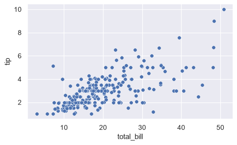
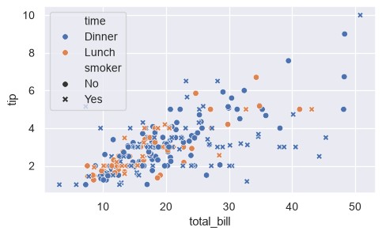
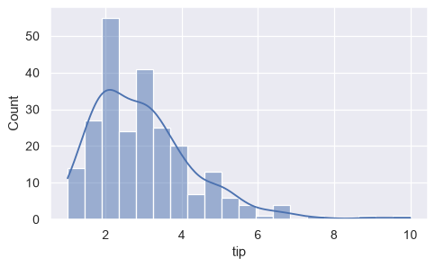
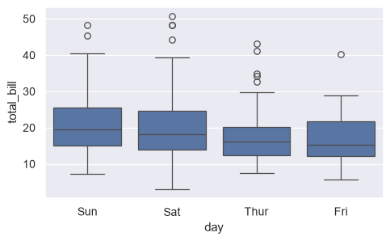
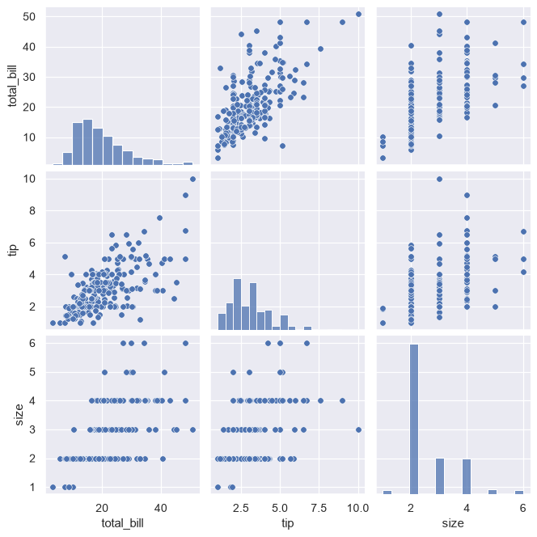
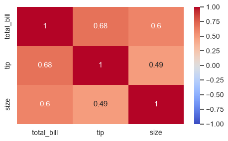

📖 対応する教科書：VanderPlas, Python Data Science Handbook（オンライン版）
- Handbook 4.14 Visualization with Seaborn
①
Seabornとは
Matplotlibの上に作られた、統計向けの描画ライブラリ
Seabornは、Matplotlibをもとにした描画ライブラリです。DataFrameをそのまま渡して、少ないコードで見栄えのよい統計グラフが描けます。
import seaborn as sns tips = pd.read_csv('data/tips.csv') sns.set_theme() sns.scatterplot(data=tips, x='total_bill', y='tip')

hueで色分け、sizeで大きさ、styleで形を、列の値に応じて変えられます。
sns.scatterplot(data=tips, x='total_bill', y='tip', hue='time', style='smoker')

🍎 かんたん説明
Matplotlibは「1つずつ指示する」、Seabornは「表と列名を渡して、まとめて描かせる」イメージです。
💻 ミニ練習：scatterplot
tipsのsizeを横軸、tipを縦軸にした散布図を、sexで色分けして描いてください。
sns.scatterplot(data=tips, x='size', y='tip', hue='sex')
dataにDataFrame、x・y・hueに列名を渡します。
②
分布を見る：histplot・boxplot
カテゴリごとの比較
分布を描くのはsns.histplot、カテゴリごとの分布の比較はsns.boxplotが定番です。
sns.histplot(data=tips, x='tip', bins=20, kde=True)

sns.boxplot(data=tips, x='day', y='total_bill')

📌 箱ひげ図の読み方：箱の中の線が中央値、箱の上下が四分位（25%と75%）、ひげの外の点は外れ値の候補です。
🍎 かんたん説明
箱ひげ図は、グループごとの「中心」と「ばらつき」を1つの図で比べられます。
💻 ミニ練習：boxplot
tipsで、timeごとのtipの箱ひげ図を描いてください。
sns.boxplot(data=tips, x='time', y='tip')
xにカテゴリ、yに数値の列を指定します。
③
関係を一覧する：pairplot・heatmap
列どうしの関係をまとめて見る
sns.pairplotは、数値の列どうしの散布図を全部の組み合わせで並べます。
sns.pairplot(tips[['total_bill', 'tip', 'size']])

相関係数の表は、heatmapで色にすると一目で分かります。
corr = tips[['total_bill', 'tip', 'size']].corr() sns.heatmap(corr, annot=True, cmap='coolwarm', vmin=-1, vmax=1)

🍎 かんたん説明
まずpairplotで全体を眺め、気になる関係をscatterplotで深掘りする、という流れが定番です。
💻 ミニ練習：heatmap
相関行列corrを、数値付き（annot=True）のヒートマップで描いてください。
sns.heatmap(corr, annot=True)
annotでセルに数値を書き込みます。
📝 確認クイズ
0 / 6
✏️ Questions are in English — answers are checked instantly.
Question 1
What is Seaborn built on?
Question 2
What does the hue argument do in sns.scatterplot?
Question 3
Which call shows the distribution of one numeric column?
Question 4
What does the line inside a box of a boxplot represent?
Question 5
What does sns.pairplot(df) produce?
Question 6
What does annot=True do in sns.heatmap?